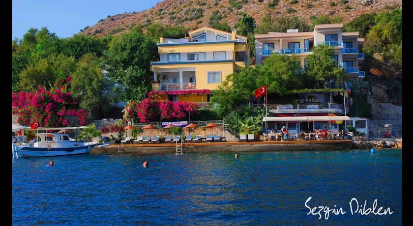
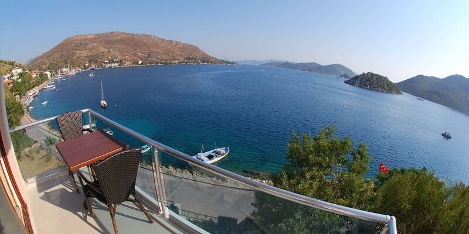
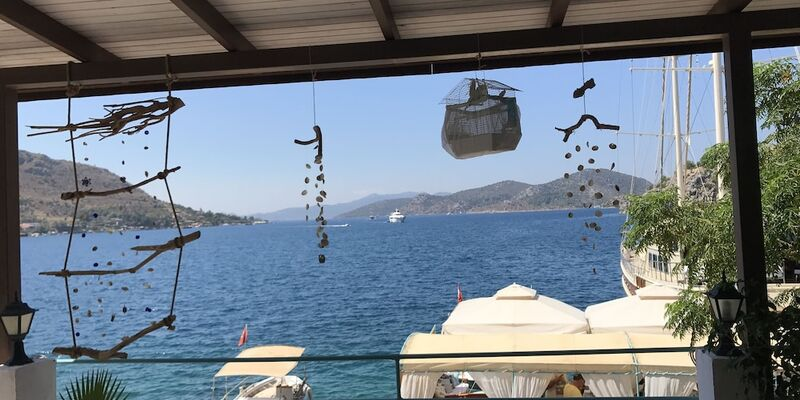

Denizcilerin bildiği koy
Kaptanın kıyısında
sade günler.
Bozburun sahil yürüyüş yolunda, Cumhuriyet Caddesi No:119/A’da deniz kültürünü kıyı misafirperverliğiyle buluşturur.
Yılmaz Kaptan Otel’NIN RİTMİ
Kaptanın kıyısında
denize alışın.
Deniz manzaralı odalar, özel iskele ve 24 saat bilgi/resepsiyon desteği; Yılmaz Kaptan’da koyu keşfetmek kolaydır.
Deniz manzaralı odalar, özel iskele ve 24 saat bilgi desteği; Yılmaz Kaptan’da koyu keşfetmek kolaydır.
Denizcilerin sofrası ↘
Kaptan Panoramik Deniz Süiti / Yılmaz Kaptan Otel02KONAKLAMA
Kaptan Panoramik Deniz Süiti
46 m² + 14 m² balkon; deniz manzarası, geniş yatak, klima, Wi-Fi ve kıyı günleri için ferah bir dış alan.

YILMAZ KAPTAN’DA BİR GÜN
Denizcilerin bildiği koyda uzun bir gün.
Kıyı lezzetleri · açık hava
Denizcilerin sofrası
Kıyıdan gelen lezzetler, açık hava ve günün sonunda paylaşılacak uzun hikâyeler; Bozburun’un deniz kültürü masaya taşınır.
Yılmaz Kaptan Otel için sor ↗İLETİŞİM & KONUM
Yılmaz Kaptan Otel
ÖZEL İSKELE · DENİZ KÜLTÜRÜ · BOZBURUNDeniz manzaralı odalar, özel iskele ve 24 saat bilgi desteği; Yılmaz Kaptan’da koyu keşfetmek kolaydır.
Özel tekne bağlama iskelesi, sahil yürüyüş yolu konumu